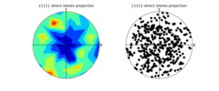
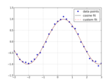
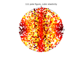
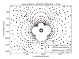
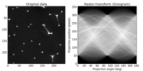
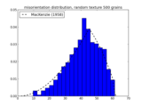
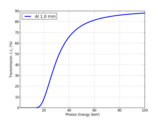
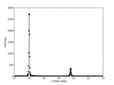

Examples¶
3d_visualisation¶

2-6-2_30k00_c1_3d.py

AuCu_crystal.py

cracked_single_crystal_with_slip_systems.py

crystal_lattice_3d.py

cubic_crystal_3d.py

grain_hkl_3d.py

hcp_crystal_3d.py

hexagonal_crystal_3d.py

mousse_3d.py

pa6_teg.py

pole_figure_3d.py

pure_Ti_all_grains.py

sand_volren.py

steel_damage_3d.py


finite_elements¶

poly_40_grains.py
plotting¶

Au_6grains_pole_figure.py

Cu_111_pole_figure.py

Cu_200_pole_figure.py

contour_pole_figure.py

cos_fitting.py

cubic_elasticity.py

field_pole_figure.py

hexagonal_elasticity.py

laue_ellipse.py
pyplot_show_pixel_value.py

radon.py

random_texture_misorientation.py

slip_traces.py

xray_mar165_detector.py

xray_trans_Al.py

xray_xpadS140_azimutal_regroup.py

xray_xpadS140_detector.py